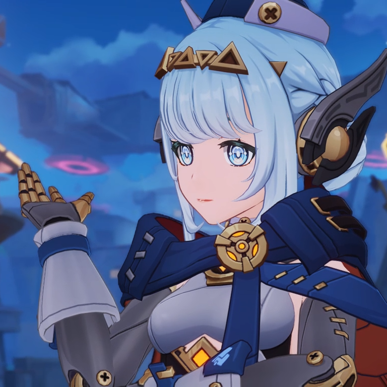
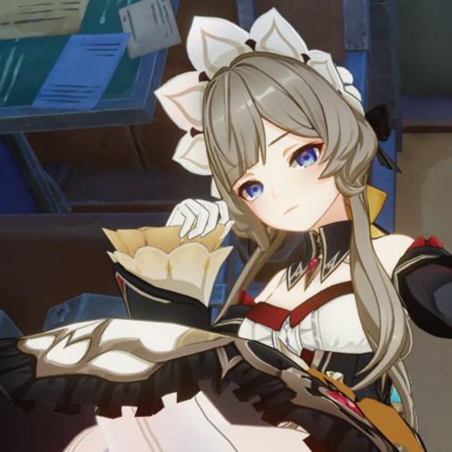
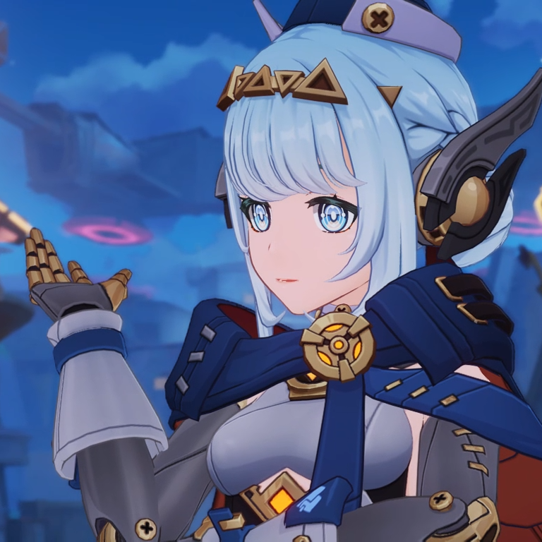
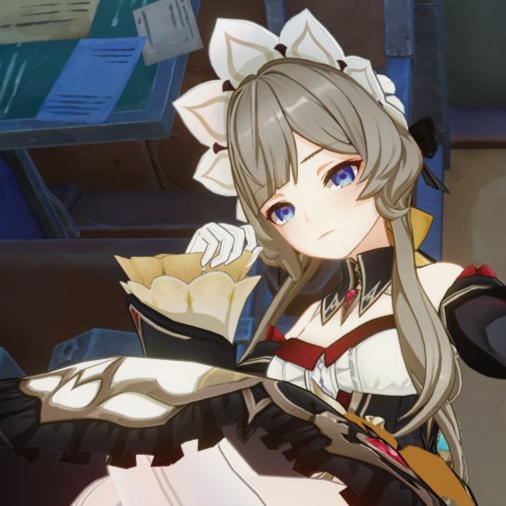

Traveler's Journey in Nod-Krai
A personal record of places I walked through, people I met, and thoughts I probably shouldn't have written down.


Nod-KraiMoon-Blessed Land, at The Edge of Teyvat
I can feel something new ...
Different from any other region that I've traveled so far, Nod-Krai seems to introduce a totally new source of power, an ancient one. Just like any other vision elements, I could just utilize the Kuuvahki power quite well.
One of my first impression towards Nod-Krai was the technology and buildings, it's like leftover scraps what makes this place whole. After seeing Ineffa, I can't help but to think - will Nod-Krai be comparable to Fontaine? And also, the Kuuhenkis are cute.


I can feel something new ...
Different from any other region that I've traveled so far, Nod-Krai seems to introduce a totally new source of power, an ancient one. Just like any other vision elements, I could just utilize the Kuuvahki power quite well.
One of my first impression towards Nod-Krai was the technology and buildings, it's like leftover scraps what makes this place whole. After seeing Ineffa, I can't help but to think - will Nod-Krai be comparable to Fontaine? And also, the Kuuhenkis are cute.
 